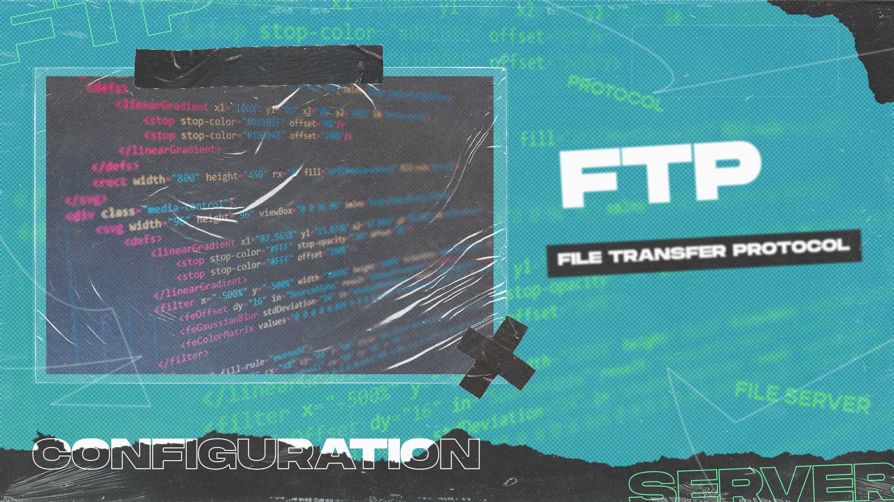

INFO - Lo pasti udah gak asing lagi mendengar yang
namanya file, kan? File adalah berkas komputer yang merupakan
identitas dari data yang disimpan didalam berkas sistem yang dapat
diakses dan diatur oleh pengguna komputer. Salah satu contoh file
ekstensi yang umum kita gunakan adalah file dengan ekstensi ".mp3"
untuk mengakses lagu, ".mp4" untuk mengakses video, serta ".docx"
yang umum digunakan untuk membuka file berformat Ms. Word.
Sama halnya dengan File Server, Apa itu
File Server? Apakah lo udah pernah mendengar produk digital
bernama File Server tersebut? File server memiliki berbagai
manfaat dalam memudahkan proses integrasi file antar jaringan pada
sebuah computer. Bisa dikatakan dan bisa dibilang bahwa
File Server sendiri adalah akar dan tiang dari internet. Yok
kita bahas!
Pengertian File Server
File Server adalah sebuah layanan pada komputer berbasis
arsitektur Client-Server yang memberikan berbagai layanan
pada media penyimpanan (Storage). File Server didesain
agar memungkinkan pengguna dapat mengakses atau memodifikasi sebuah
berkas, Sob. Nah, File Server sendiri bila merujuk pada
metode pengaksesan yang lebih luas (semisal: Jaringan Internet) maka
pengaksesan tersebut dikenal dengan istilah
FTP (File Transfer Protocol). Nah, sekarang FTP tuh apasih? nanti kita bahas, sekarang fokus ke
File Server dulu, yak!
File Server pada era modern seperti saat ini lebih
mempertimbangkan hal-hal yang kompatible dengan kebutuhan pada
kapasitas penyimpanan, kecepatan akses, kemampuan memperbaiki data
yang rusak, dan secara konstan mengganti kehandalannya melalui
pembaruan hardware dan teknologi.
File Server merupakan konsep dasar berbagi file atau
berkas digital antara komputer klien dengan komputer server.
Persoalan berbagi file merupakan persoalan yang tingkat
kompleksivitasnya tinggi. Namun, tahukah lo bahwa
file server diciptakan untuk masalah sederhana? Kalo untuk
masalah hidup sih gak bisa ya, sob. Nah, kita dapat berbagi sebuah
file dalam suatu jaringan dan dapat mengakses serta
memodifikasi file tersebut tanpa memerlukan penyimpanan pada
komputer personal yang kita memiliki.
"Terus cara kerjanya gimana?" Nih, gw kasih tau ya, sob. Let's Go
meluncur!
Cara Kerja File Server
File Server bekerja secara kompleks, yaitu menyimpan sebuah
informasi kemudian membagikannya dalam waktu bersamaan. Dengan
demikian, pengguna merasa sedang menggunakan tempat penyimpanan yang
bersifat pribadi atau personal. Contoh yang paling sering ditemui
adalah Google Drive, sob. File Server tersebut adalah terjadi
permintaan klien pada sebuah server, selanjutnya server akan
menterjemahkan jenis permintaan klien dan menampilkan output sesuai
dengan analisisnya tersebut. Pada sebuah contoh simpel, ketika lo
mengakses google.co.id dan mengetikkan “pengertian file server” maka
selanjutnya google akan menampilkan data seputar pengertian file
server tersebut yang telah tersedia pada databasenya.
Udah selesai mengenai pembahasan File Server, sekarang kita
lanjut ke pembahasan FTP (File Transfer Protocol). Pastikan
gak ada barang lo yang ketinggalan, yak! Kita lanjut.
FTP (File Transfer Protocol)
File Transfer Protocol atau FTP dikembangkan sebagai standar
komunikasi dalam pengaksesan file, terutama untuk jangkauan
transfer file jarak jauh. Perbedaannya dengan
file server terletak pada pola komunikasinya.

FTP (File Transfer Protocol) merupakan satu dari sekian
banyaknya jenis protokol pada jaringan komputer. Jenis protokol FTP
didesain dengan harapan dapat melakukan pelayanan yang lebih
spesifik dalam melakukan transfer file antara
Client-Server serta jangkauan yang lebih luas. FTP
berkomunikasi pada jalur TCP/IP, sedangkan
File Server berjalan pada komunikasi UDP. Artinya,
File Server hanya menyediakan lokasi penyimpanan berkas pada
jaringan untuk dapat diakses.
Ketika lo sedang mengakses internet, lo sebenarnya menggunakan
berbagai jenis protokol. Untuk menjelajahi internet, lo memakai
protokol HTTP. Untuk mengirim dan menerima pesan instan, lo
menggunakan protokol XMPP. FTP secara sederhana merupakan protokol
yang digunakan untuk memindah-mindahkan file. Jadi, saat lo sedang
mengunduh dan mengunggah file, maka semua aktivitas tersebut dapat
dilakukan dengan adanya bantuan FTP, walaupun sebenarnya pada saat
ini protokol HTTP dan HTTPS juga sudah bisa melakukan hal yang sama.
Hingga saat ini, FTP merupakan protokol tertua yang masih digunakan
dan menjadi cara yang nyaman dan efektif untuk memindahkan file.
Ada dua hal penting yang perlu diketahui, yaitu FTP server dan FTP
Client. FTP Server adalah server yang menjalankan software
(aplikasi) sehingga dapat menyediakan layanan tukar menukar apabila
ada permintaan dari FTP client. Sedangkan, FTP client adalah
komputer yang lo gunakan untuk melakukan berbagai aktivitas
download, upload, rename, delete, dan sebagainya.
Cara Kerja FTP
File Transfer Protocol atau FTP bekerja dengan cara yang
berbeda dengan File Server, yaitu menggunakan komunikasi data
antara komputer server dengan komputer client.
Protokol yang digunakan pada komunikasi FTP adalah TCP/IP dengan
port 21. Port 21 disini dimaksudkan untuk
berkomunikasi menggunakan perintah (command). Dengan prinsip
tersebut maka antara klien dan server dapat membentuk
session untuk saling berkomunikasi sebelum proses transfer
data berlangsung. Proses komunikasi tersebut membutuhkan perangkat
lunak FTP Server dan FTP Client.
Prinsipnya, FTP bekerja dengan mengandalkan autentikasi standar yang
meminta pengguna komputer memasukkan username dan password untuk
bisa mengakses data. Setiap kali lo ingin mengunduh, mengunggah,
ataupun melakukan aksi lain terhadap data dalam komputer, maka
diperlukan akses dari FTP untuk mengabulkan perintah yang lo
lakukan, sob. Password dan username ini merupakan kunci akses lo
untuk mengakses data di dalamnya. Dengan password dan username yang
diberikan oleh FTP, lo bisa leluasa memindahkan, menyalin, membuat,
dan menghapus data yang ada di dalam direktori penyimpanan komputer.
Ini sebabnya, proses transfer data pada FTP sangat bergantung pada
sistem keamanan enkripsi. Namun, sebelum terjadi pertukaran data
tersebut, FTP client terlebih dahulu harus melakukan permintaan
koneksi terhadap FTP server. Jika FTP client terhubung ke FTP
server, barulah di situ terjadi aktivitas yang kerap lo lakukan
seperti mengunduh data, mengunggah, dan sebagainya.
Ya, jadi segini dulu informasi yang gw sampaikan. Gimana? paham kah
lo? Gak apa-apa gak paham juga, yang penting ini bisa jadi
informatif buat lo dan kehidupan lo. Btw ada yang tertarik mencoba
File Server & FTP? Ok, sekian dari gw. Terimakasih!